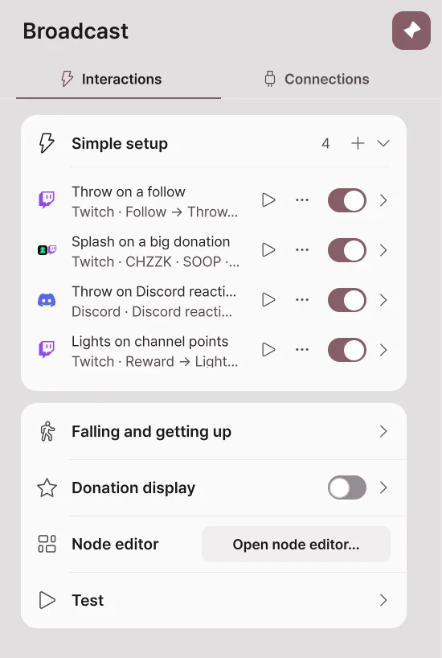
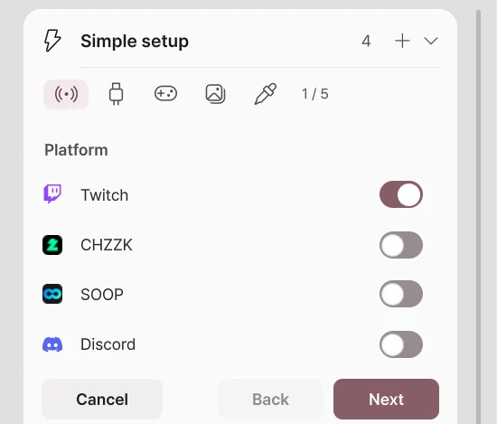
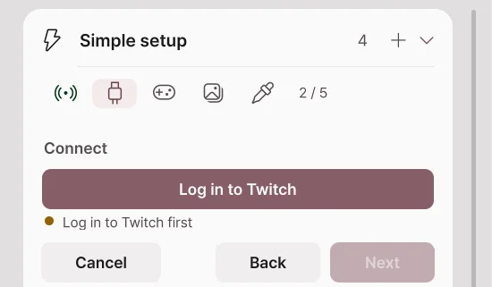
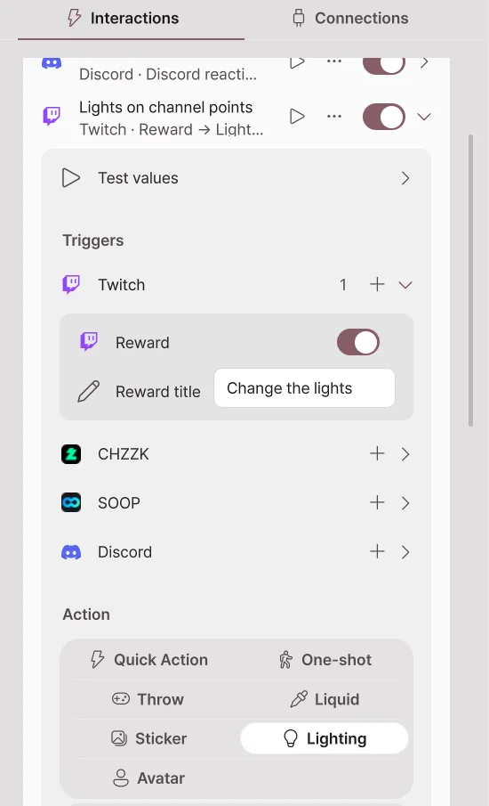
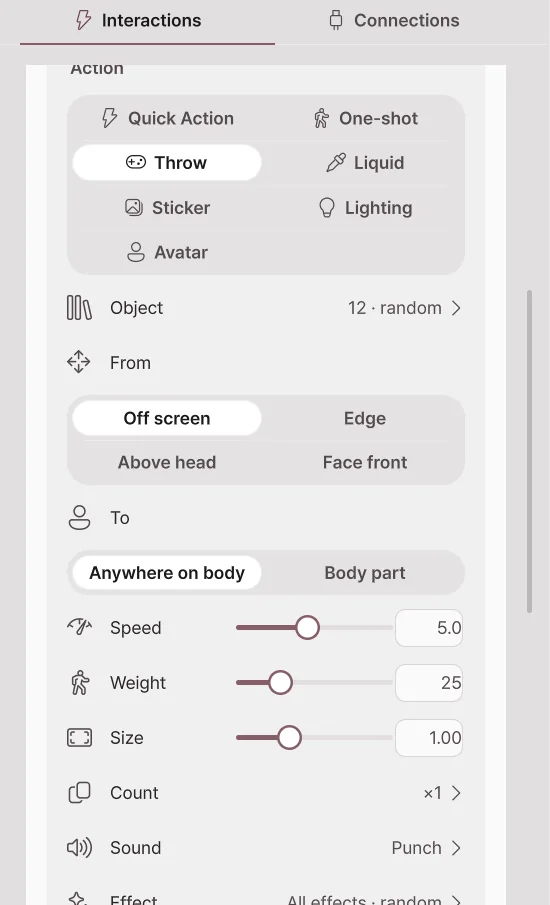

Simple setup
New in 2.2.0; not available in 2.1.2 or earlier.
Simple setup is a list where each line says "when this event arrives, react like this". For example, throw an object when someone follows, and pour water on the avatar for a donation of 10,000 won or more. It is a broadcast integration feature, so it needs Pro, and it is currently in beta.
Make items on the Simple setup card in Broadcast → Interactions.

| What a row shows | Meaning |
|---|---|
| Platform icon | The platform this item receives events from. |
| Name | The item's name. At first it is named like "Rule 1". |
| Trigger → Action | A summary of which event does what. |
| ▶ | Sends one made-up event to test it right away. |
| ⋯ | The Rename, Duplicate, Turn on/Turn off and Delete menu. Right-clicking the row opens it too. |
| Switch | Turns the item on and off. |
Making a new item
- Press + on the Simple setup card.
- In the Platform step, turn on the platforms to receive events from. You can turn on several together.
- Press Next.
- In the Connect step, check that you are logged in to those platforms. If not, connect with the login button.
- In the Throw, Sticker and Liquid steps, choose which events run each of them. A step with no event chosen is not made.
- Press Make to add the item to the list.


Fields left empty are filled with the default objects, sounds, effects and sticker folder, so the item works right away. Change the details later by expanding the item.
Examples
| What you want | Trigger | Action |
|---|---|---|
| Throw an object on a follow | Twitch Follow | Throw |
| Pour water for a donation of 10,000 won or more | CHZZK donation, minimum amount 10000 | Liquid |
| Pour water for 100 or more star balloons | SOOP star balloon, minimum count 100 | Liquid |
| Throw on a Discord friend's reaction | Discord reaction | Throw |
| Change the lights with channel points | Twitch Reward, reward title | Light |
The action settings of the examples are explained in detail in Throw, Liquid and Falling.
Expanding an item
Press the arrow on the right of a row to expand the item.

Triggers
Triggers are grouped by platform. Add a trigger with + next to a platform. One item can hold triggers from several platforms together.
| Trigger | Condition |
|---|---|
| Reward (Twitch) | A channel points reward with the same reward title |
| Chat | Text the message must contain |
| Bits, donations, star balloons | Minimum and maximum amount or count |
| Subscribe | New, continued and gift subscriptions |
| Discord reaction | The reaction to handle, minimum and maximum count |
| Discord mini-game result | The game, Only a jackpot, at least this many points back |
Expand Test values to set the nickname, amount and message that the ▶ test sends.
Actions

| Action | What it does |
|---|---|
| Quick Action | Runs one quick action. |
| One-shot | Plays a one-shot animation once. |
| Throw | Throws props at the avatar. The count can grow with the donation amount. |
| Liquid | Pours a liquid such as water or milk. |
| Sticker | Sticks a picture on the avatar. It can also use the viewer's profile picture. |
| Light | Briefly turns a light on or off, or changes its color, brightness, effect or preset, then goes back after the set time. |
| Avatar | Turns tracking off, loops a dance, or puts a pose on for a while. |
Cooldown and per-viewer limit
| Item | What it does |
|---|---|
| Cooldown (s) | How long to wait after one run before the next run. |
| Per viewer | Applies the cooldown separately to each viewer's events. |
| Delete this rule | Deletes the item. |
| Open in the node editor… | Opens the graph this item made in the Node editor. |
Testing and checking problems
- Press ▶ to test the item without a broadcast.
- If it does not react to real events, check the platform connection, the item switch, the cooldown and the minimum amount in turn.
- If it still does not work, see When broadcast integration does not work and send an error report.